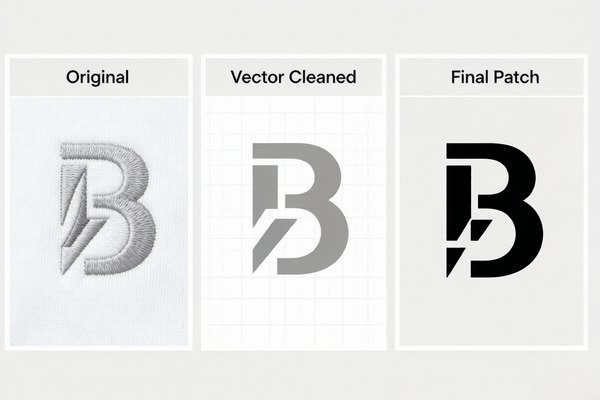
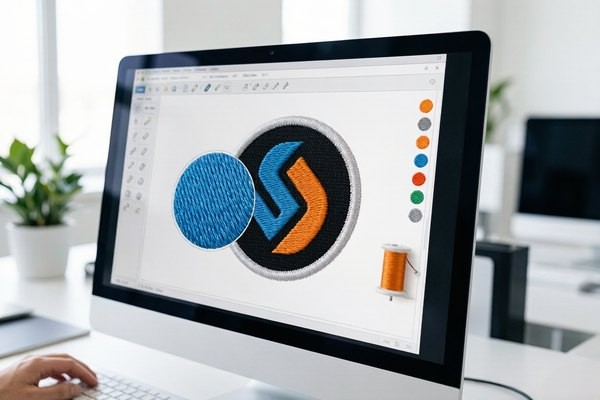

Converting Logos to Patches: The Complete Vector Artwork Guide
Most patch orders start with one question: "Can you turn my logo into a patch?" The answer is almost always yes — but the quality of the result depends on the artwork you send. This guide explains vector vs raster files, what the factory actually needs, and how to prepare your logo so the first proof is close to perfect.

Your logo already exists, and that's the whole point. Converting it into a custom patch should be a straightforward process: send the artwork, approve a digital proof, and let the factory handle production. In practice, the smoothest orders come from buyers who understand one thing — vector artwork makes everything faster, sharper, and cheaper to get right the first time.
This guide walks through why vector files matter, how to check whether your logo is ready, and what to do when all you have is a JPG from your website. By the end, you'll know exactly what to send when you request your quote.
1. Why Vector Artwork Matters for Custom Patches
A vector file stores your logo as mathematical paths — lines, curves, and shapes — instead of pixels. That single difference decides how well your logo survives the trip from screen to thread.
- Scalable to any size. A vector logo can be enlarged to a 10-inch back patch without losing a single edge. A pixel-based logo gets blurry the moment it exceeds its original resolution.
- Clean, accurate edges. Embroidery machines follow vector outlines to create crisp borders. Ragged pixel edges force the digitizer to guess where your design really ends.
- Color separation is exact. Each color in a vector file is a separate, well-defined shape. That's exactly how the factory separates thread colors for production.
- Faster proofing. Digitizers can work directly from clean vector art. Rebuilding a poor raster logo from scratch adds days to the timeline.
None of this means a raster logo is unusable — millions of patches get made from JPGs and PNGs every year. It just means the factory has to rebuild the artwork, which takes longer and can subtly change your logo if the source is low quality. Vector is the fast lane; raster is the scenic route.
2. Raster vs. Vector: Know What You're Sending
If you're not sure what kind of file you have, the check takes ten seconds: open it in a viewer and zoom in until the logo fills the screen. If you see smooth edges and crisp curves, it's vector. If you see squares (pixels), it's raster.
Rule of thumb: send the file you'd give to a print shop. If it's good enough for a billboard, it's more than good enough for a patch. If it's a small logo cropped from your website, expect a redraw.
3. Is Your Logo Ready for Patches? The 5-Point Check
Before submitting, run your artwork through this checklist. Five boxes ticked means your first digital proof will almost certainly match your logo exactly.
The Logo-Ready Checklist
- Vector file or 300 DPI raster — AI, PDF, SVG, EPS, or CDR preferred; high-res PNG accepted.
- Fonts converted to outlines — so text can't change or break on another computer.
- Colors identified — Pantone codes if you have them, or a simple color list.
- Minimum size considered — text stays legible at the final patch size (see our size guide).
- Edges clear of clutter — no drop shadows, gradients, or background colors the patch must fake.
Missing one or two? Don't cancel the order. Tell us what you have, and we'll advise whether to send it as-is or have our design team rebuild it. Our custom patch design guide covers the same rules from a designer's perspective if you want the background.
4. Step-by-Step: Convert Your Logo into a Patch Design
Here's the full journey from the logo on your laptop to a stitched patch, with what happens at each step.
Step 1 — Clean up the artwork
Open your vector file and remove anything that won't translate to thread: gradients, drop shadows, hidden layers, and stray shapes. If the logo uses effects, flatten them. What remains should be flat color shapes — that's the language embroidery machines understand.
Step 2 — Simplify for embroidery
Not every detail belongs on a patch. Tiny serifs, thin strokes, and close-packed lines fill in with thread. If your logo has fine details, simplify them or consider a woven patch (which holds fine detail better) or sublimation printing (which handles gradients and complex art).

Step 3 — Choose size and coverage
Decide the final patch size before you send the file, because it changes what details survive. A 4-inch chest patch can keep more detail than a 2-inch hat patch. For guidance on standard sizes, check our patch size guide.
Step 4 — Lock the colors
Match your logo's colors to the closest thread colors, and note them on the artwork. Our color guide for patch design explains how Pantone references and thread cards keep colors true.
Step 5 — Export and send the file
Export the final version as AI, PDF, or SVG with fonts outlined, and attach it to your quote request. Include your preferred size, backing (sew-on, iron-on, or Velcro), and quantity. The factory will handle the rest.
5. Common Logo-to-Patch Mistakes (and How to Avoid Them)
After thousands of logo conversions, these are the issues that cause the most rework:
- Sending a 72 DPI web logo. It looks fine on a screen and terrible in thread. If you only have a web version, ask us to redraw it.
- Leaving fonts as live text. The file opens on a machine without your font, and the whole design shifts.
- Expecting gradients in embroidery. Smooth gradients belong on sublimation patches, not thread.
- Designing at 12 inches, ordering at 2. Detail that looks clear at large size vanishes at hat-patch scale.
- Forgetting the border margin. Elements that touch the design edge get trimmed by the merrowed or heat-cut border.
- Hiding white in the background. White in your logo must be an actual shape, not a blank area — otherwise the patch fabric shows through.
6. What If You Only Have a JPG or PNG?
This is the most common situation we see, and it's completely normal. Here's what actually happens when you send a raster-only logo.
- High-resolution PNG (300 DPI): our digitizers can usually trace this directly. You'll get a faithful patch with minimal changes.
- Low-resolution JPG: we redraw the logo as clean vector artwork first, then digitize it. It takes a little longer and the proof is where you'll see and approve any simplification.
- A photo or hand-drawn sketch: this counts as a design project, not a conversion. Our design team can rebuild it into a patch-ready logo — free with your order.
One thing to know: AI upscaling tools can enlarge a small logo, but they can't invent detail that isn't there. A redraw by a human designer produces a crisper patch every time.

7. From Artwork to Digital Proof: What Happens Next
Once your logo arrives, the workflow is simple:
- We review the artwork and confirm it's usable, or flag anything that needs rebuilding.
- You receive a free digital proof within 12 hours, showing the patch design at actual size.
- You request changes — revisions are free until you're satisfied.
- You approve, and production starts on the final design.
That's the entire secret: good artwork in, good patch out. When in doubt about your file, send it anyway — a quick look from our team costs nothing and saves days.
Turn Your Logo Into a Custom Patch Today
Send us your logo and get a free digital proof in 12 hours. Factory-direct pricing, no minimum order, and unlimited revisions before production.
Get Free QuoteFrequently Asked Questions (FAQ)
Q1: What file format should I send to convert my logo to a patch?
Vector files are best — AI, PDF, SVG, EPS, or CDR, with fonts converted to outlines. If you only have raster files, send a 300 DPI PNG or JPG at the final patch size. Low-resolution web images will need to be redrawn.
Q2: Can you convert a JPG logo into an embroidered patch?
Yes. A high-resolution JPG can be traced directly. A low-resolution one gets redrawn into clean vector artwork by our design team first, so the final patch is sharp. This service is free with your order.
Q3: What's the difference between converting and digitizing a logo?
Converting turns your logo into clean vector artwork. Digitizing goes one step further, turning that artwork into the stitch file that the embroidery machine reads. We handle both — you just supply the logo.
Q4: Can my logo be converted into any patch type?
Almost always. Simple logos work beautifully as embroidered patches; logos with fine lines suit woven patches; logos with gradients or photos are ideal for sublimation printing. Tell us your logo and we'll recommend the best fit.
Q5: How long does logo conversion take?
Straightforward vector files get a digital proof within 12 hours. Logos that need redrawing add a day or two, but you'll always see and approve the design before production begins.
Ready to see your logo in thread? Request your free quote and proof — we'll take it from there.